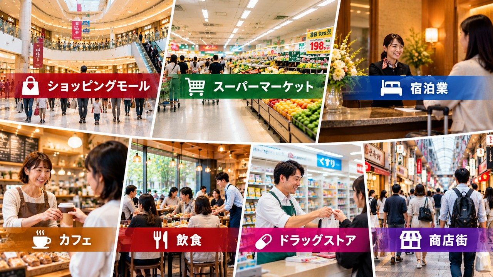
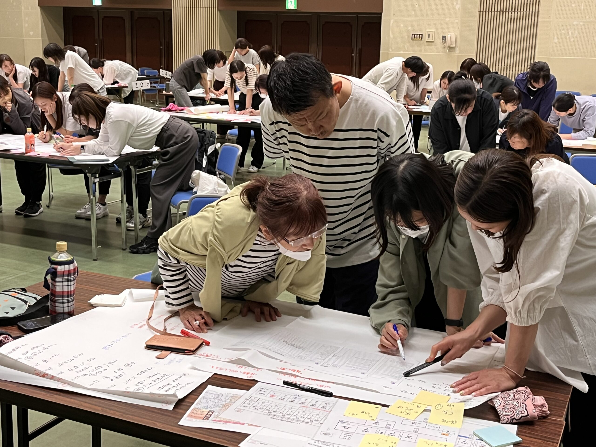

⚠️「お客様がいる状況」での災害対応の難しさ
地震発生直後、商業・サービス施設では次の判断と行動が即座に求められます。
これらは、災害発生の直後・数分以内に意思決定しなければならない事項です。
大勢のお客様に対していかに迅速かつ正確に周知し、安全を確保するか――
そのために各関係職員との連携体制をあらかじめ構築しておくことが、商業・サービス業のＢＣＰにおいて非常に重要な要素です。
一般企業の災害対応と大きく異なるのが、商業・サービス業の現場です。
営業時間中に災害が発生した場合、不特定多数の顧客が施設内にいる状態での初動対応が求められます。
🚨 顧客の安全確保が最優先
従業員の安全だけでなく、施設内にいる全てのお客様を安全に誘導・保護する体制が必要です。避難誘導の手順が曖昧なままでは混乱が生じます。
📣 情報伝達と指揮系統
パート・アルバイトを含む多様なスタッフが、緊急時に同じ判断軸で動けるよう、シンプルで明確な指示系統の整備が不可欠です。
🔄 早期営業再開のプロセス
地域の生活を支える商業施設は、被災後できるだけ早く機能を回復させることが求められます。ＢＣＰは「再開の手順」を明確にします。
🤝 サプライチェーンへの影響
仕入れ先・物流・決済システムなど、外部との連携が止まると営業継続が困難になります。代替手段の事前検討が重要です。
📋ＪＤＲＳが提供する商業・サービス系ＢＣＰ訓練
座学だけでは身につかない実践力を、模擬訓練を通じて習得します。
業種・施設規模に合わせたカスタマイズが可能です。
- 1 顧客在館時の初動対応訓練 営業中に地震・火災・停電が発生した想定で、従業員全員が適切に動けるよう訓練します。誘導ルート・放送文・役割分担を実際に体験します。
- 2 ＢＣＰ策定ワークショップ 「何が止まると営業できないか」を洗い出し、優先して守るべき業務・設備・連絡先を明文化します。現場スタッフが参加することで実効性が高まります。
- 3 本部・店舗間の連絡訓練 チェーン店・複数店舗を持つ事業者向けに、本部と各店舗が速やかに情報共有できる連絡体制の構築と訓練を行います。
- 4 行政・地域との連携確認 商業施設が地域の避難場所・物資供給拠点として機能するケースもあります。自治体・自主防災組織との連携を事前に確認しておくことが重要です。

🏨 宿泊業（ホテル・旅館）のＢＣＰ
宿泊施設では、チェックイン中・就寝中・入浴中などお客様が最も無防備な状況での災害発生を想定しなければなりません。
スタッフが少ない夜間帯でも確実に対応できる体制づくりが求められます。
- 宿泊客の居室・フロアを把握した上での迅速な避難誘導
- 外国語対応・バリアフリー対応を含む避難計画の整備
- 夜間・少人数体制での初動対応マニュアルの確立
- インバウンド（訪日外国人）への多言語情報提供体制
- 被災後の早期営業再開・風評対策のプロセス整備
※ ホテル・旅館向けのＢＣＰ訓練・策定支援についても個別にご相談いただけます。
🏬対象・ご相談先
規模・業態を問わず、商業・サービス業全般に対応しております。